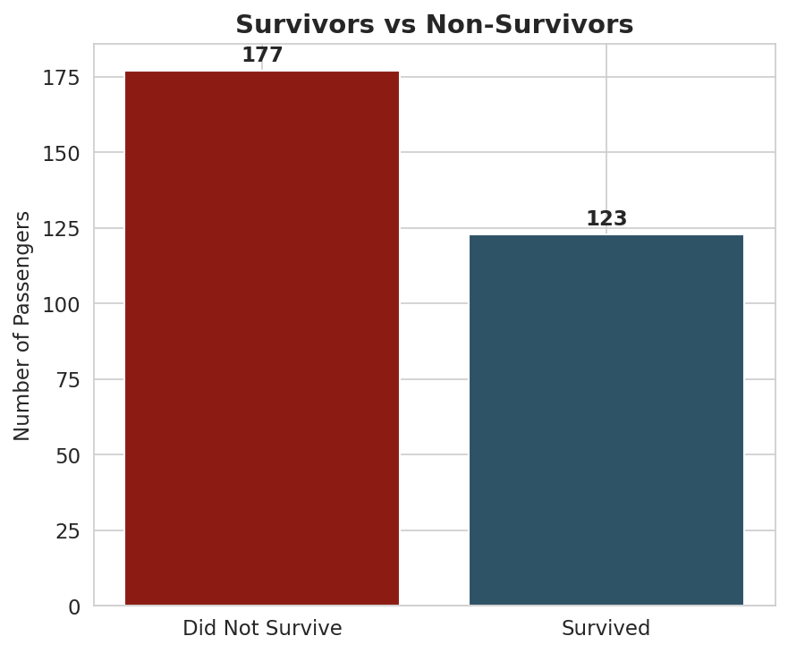
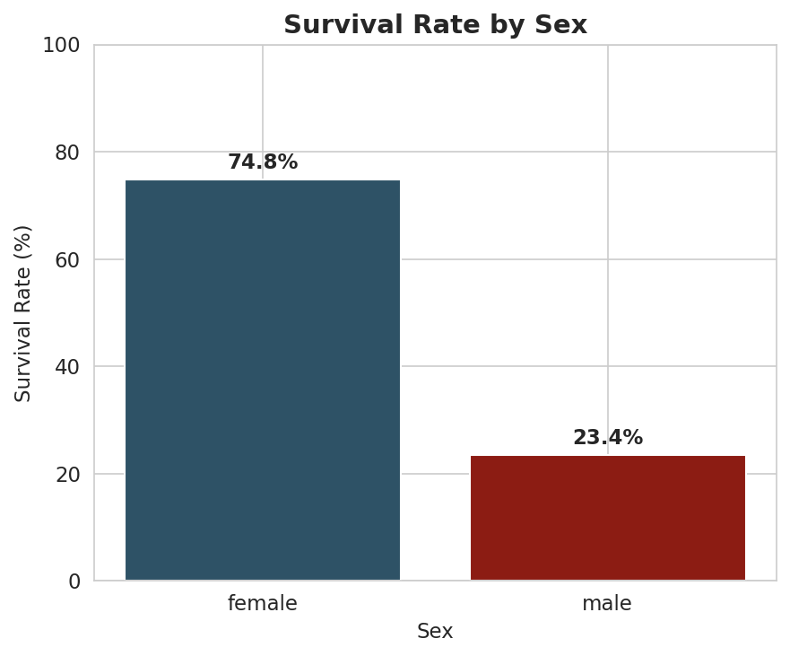
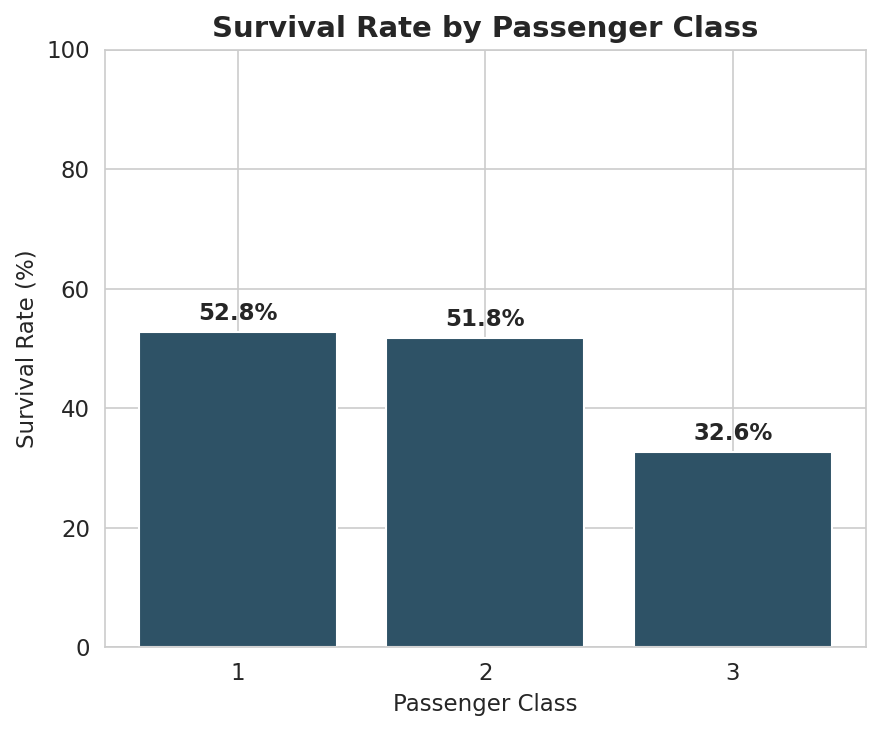
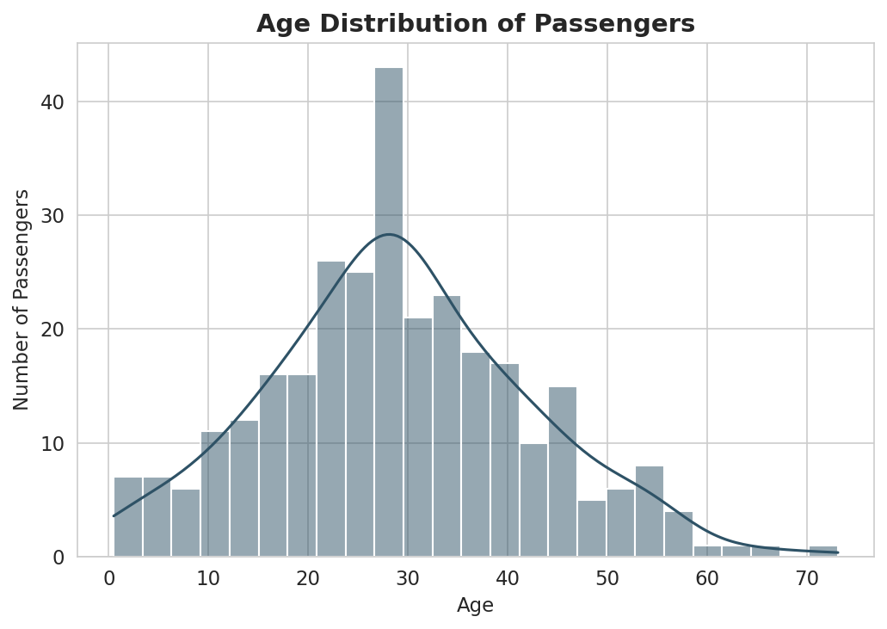
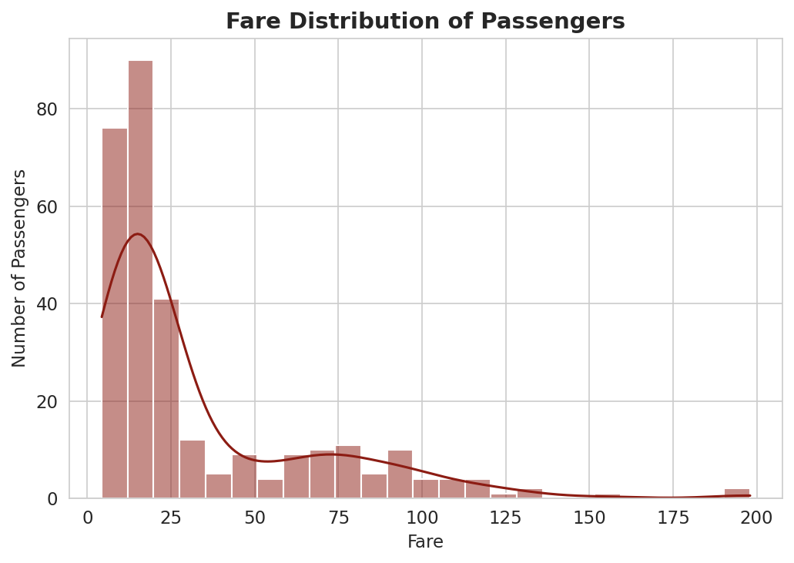
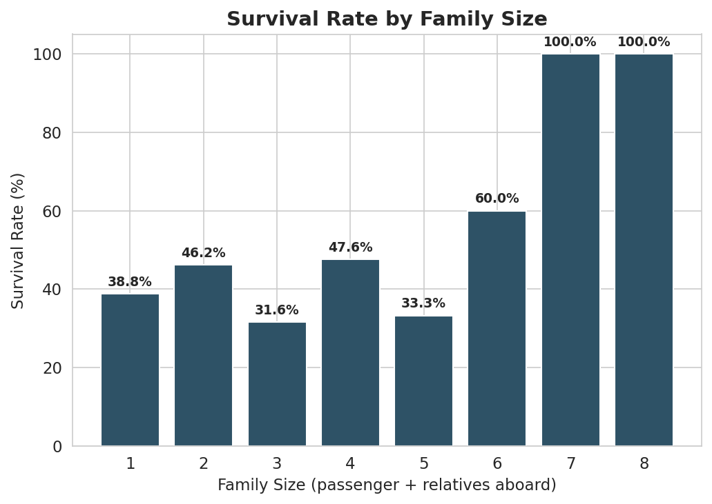
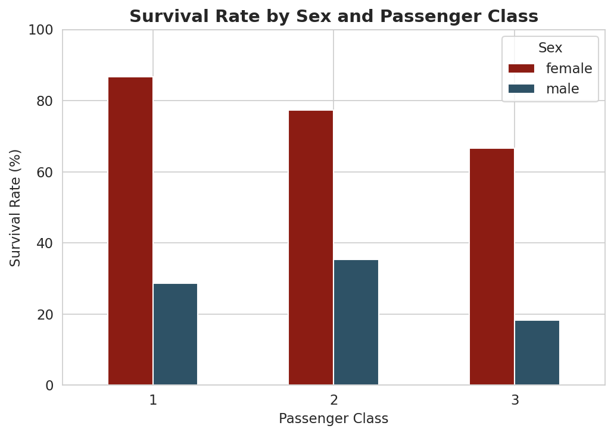
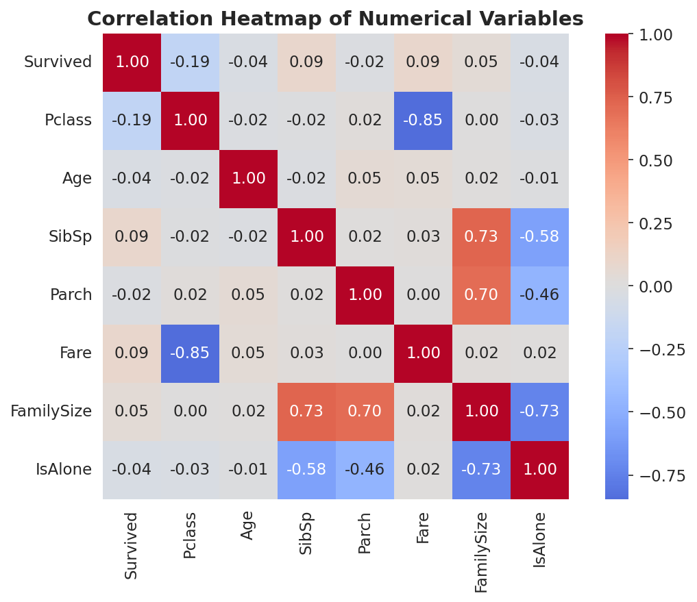

Who survived, in raw numbers
A straight count of the 300 passengers in the sample — before any grouping.

Survival by sex
The clearest single divide in the manifest.

Survival by class
First and second class edge out third class.

Age distribution
Mostly adults in their twenties and thirties.

Fare distribution
A long tail of expensive tickets pulls the average up.

Survival by family size
Travelling alone, in a pair, or in a larger group — grouped by SibSp + Parch + 1. The largest groups here represent very few passengers, so read those bars cautiously.

Sex and class together
The two strongest patterns in the manifest, side by side.

Correlation between numeric variables
How closely each numeric column moves with the others. Correlation only captures linear relationships, and does not imply causation.

Key findings
Figures are calculated directly from the sample workbook — see notebooks/Titanic_Analysis.ipynb for the full working. This is a 300-row educational dataset, not a historical record; treat these as patterns in this sample, not historical fact.